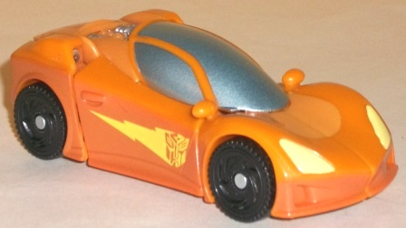
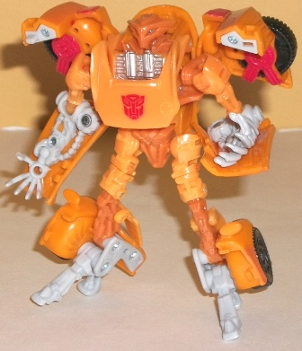
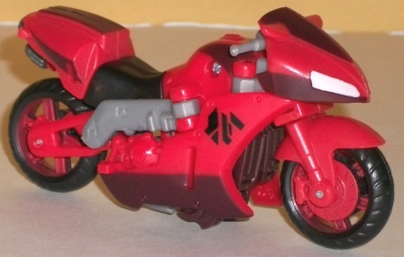
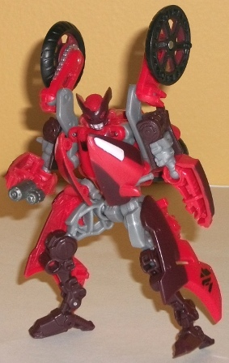

Windy
City Chase (Wal-Mart Exclusive)
Windy
City Chase (Wal-Mart Exclusive)
Price
: $16 U.S.
Overall Rating
: 8.4
(NOTE: Because this set is composed of repaints,
this is not a full-blown review. This mainly covers any changes made to
the set and the color scheme, and merely compares it to the original versions
of these molds. For a review on RotF Dead End/Detour, the mold used for
Slap Dash, go
here
. For a review on RotF
Knock Out, the mold used for Trenchmouth, go
here
.)
Slap
Dash


Allegiance:
Autobot
Size
: Scout
Difficulty of Transformation
: Easy
Color Scheme
: Moderately light orange,
dull orange, light chalky gray, and some black, light pale yellow, silver,
light metallic silvery blue, and red
Individual Rating
: 8.3
Despite his name, Slap
Dash here MAY be a tribute to G1 Wheelie, as he has a near-identical color
scheme and a somewhat similar-looking vehicle mode. That's purely speculation
on my part, but I wouldn't be surprised if it's true. (As for him not being
NAMED Wheelie, well, there's already a guy in the line with that name.)
Although the orange/light color scheme is a bit basic and a bit on the
light side with no dark colors (outside of the wheels), there are several
things done to make the colors a bit more interesting, particularly in
alt mode. There's a pretty nice dull orange "spray fade" app on the side
and rear of the car mode, so Slap Dash isn't just a solid light orange.
The lightning Autobot symbol on the car doors is a pretty nice detail to
give the figure a bit more individuality, too. The other paint details--
the silver-blue windows, the silver engine, the yellow headlights and red
taillights-- aren't particularly awesome in how they contrast with the
other colors, but they're certainly needed and keep the figure from looking
too dull. In robot mode, however, most of these paint apps are hidden from
view, with the exception of some red on the shoulders. Add that to the
rather bad-looking chalky light gray used for a lot of Slap Dash's robot
parts, and that mode ends up looking rather underwhelming compared to the
other color schemes this mold has had. (Plus, that evil-looking head just
doesn't work for an Autobot.)
No mold changes have
been made to Slap Dash.
Slap Dash Tech Specs:
Strength: 4.0
Intelligence: 4.0
Speed: 8.0
Endurance: 6.0
Rank: 4.0
Courage: 8.0
Fireblast: 6.0
Skill: 3.0
Trenchmouth


Allegiance
: Decepticon
Size
: Scout
Difficulty of Transformation
: Easy
Color Scheme
: Moderately light red,
dark brown, light milky gray, black, and some metallic gunmetal gray and
off-white
Individual Rating
: 8.5
Trenchmouth has an AWESOME
name. And given his face sculpt, I can totally imagine him being a foul-mouthed,
dirty-looking punk. However, I can't help but notice that his overall color
scheme is rather similar to
Reverb's
-- the
light red is pretty much the exact same shade, the light gray bits are
in the same places, as are most of the black pieces. Really, the major
differences between Trenchmouth and Reverb are A. The Cyberglyphic marking
on each side of his vehicle mode, compared to the blue logo on the side
of Reverb's and B. Trenchmouth tends to have dark brown where Reverb had
blue and dark red. There's a few other, really minor differences beyond
that, but that's basically the gist of it. And honestly, although it certainly
doesn't clash, I think Reverb's sparkling blue and white look much better
against the predominate red coloration than Trenchmouth's dark brown.
No mold changes have
been made to Trenchmouth.
Trenchmouth Tech Specs
:
Strength: 3.0
Intelligence: 8.0
Speed: 6.0
Endurance: 3.0
Rank: 6.0
Courage: 6.0
Fireblast: 4.0
Skill: 5.0
The "Windy City Chase"
versus pack has an overall higher rating than the
other
Wal-Mart exclusive
N.E.S.T Versus pack, but paradoxically, I actually
recommend the other set more. Why? Well, the
molds
used for this
set are overall a bit better than the molds used for "Road Rival Showdown",
why explains the higher score. However, the color schemes on the "Road
Rival Showdown" set are great and better than the original versions of
those molds, whereas the color schemes on this set are... not. They're
not BAD, but Slap Dash really could've used some more dark color besides
just on the wheels, and Trenchmouth is a bit too derivative of Reverb.
Unless you're a completist, I'd recommend getting the individually-packed
Dead End/Detour and Knock Out versions of these molds instead.
Windy City Chase Bio
:
Everything Slap Dash does, he does in
a hurry. Not because he's fast-- though he is-- but more because he's lazy.
Careful planning just isn't his thing. Unfortunately, Trenchmouth is not
the sort of Decepticon you want to fight without some foresight. He may
be a filthy, poorly tuned road hog, but he's also a smart, canny fighter.
Review by Beastbot
Back to Transformers:
Revenge of the Fallen Index